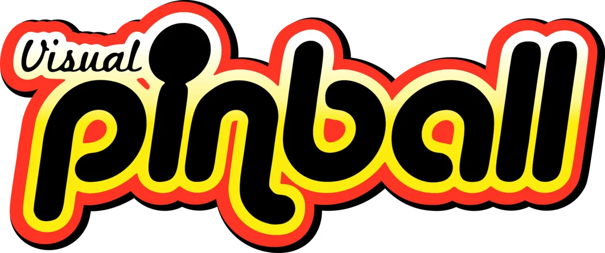
vpinball · Contributor
Sub-project of VPX designed to run on non-Windows platforms.
 jsm174's Portfolio
jsm174's Portfolio
Hi, I'm Jason. I build software, create things, and have a passion for pinball.

Sub-project of VPX designed to run on non-Windows platforms.
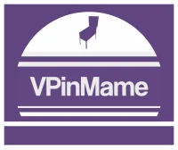
Sub-project of PinMAME to be used as a library in third party projects such as Visual Pinball.
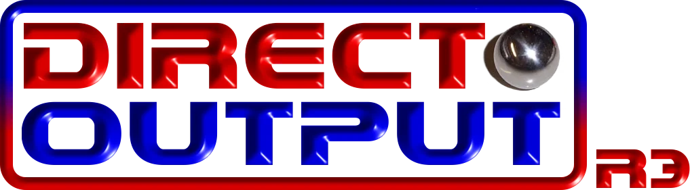
Cross platform port of the C# DirectOutput Framework.
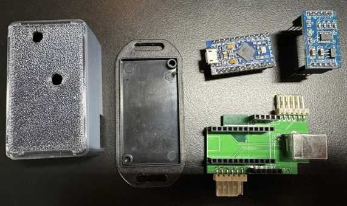
Remix of Zeb's Pinball Encoder firmware to support joystick button inputs.
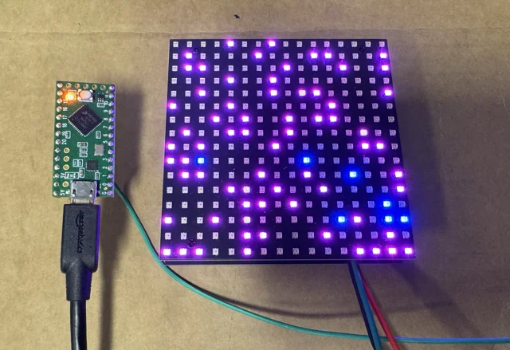
Remix of TeensyStripController to support Teensy LC devices using the Adafruit NeoPixel library.
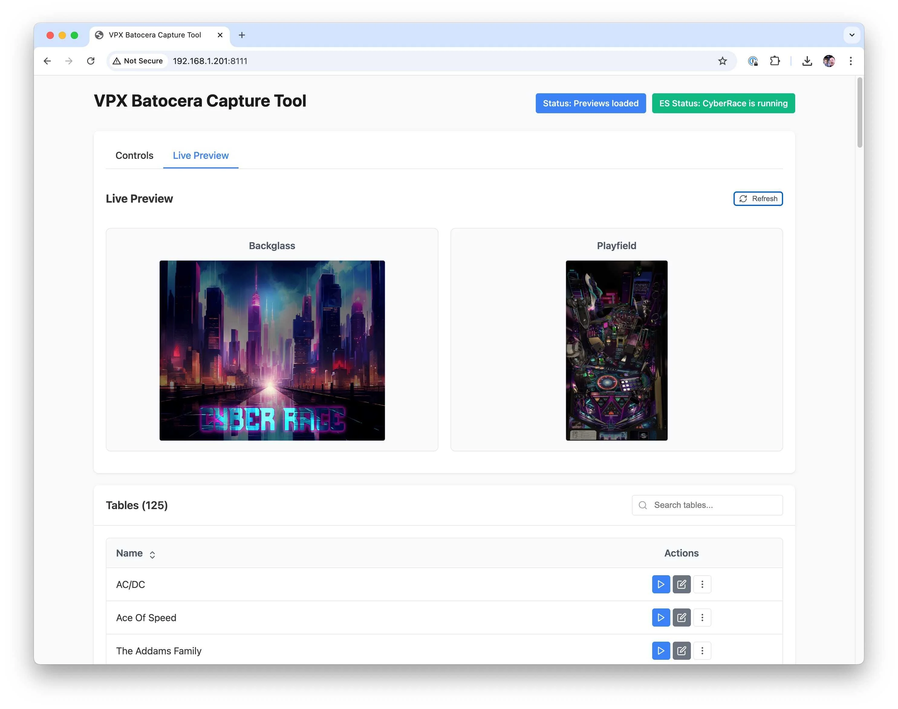
VPX Batocera Capture Tool - Capture backglass and table images using Batocera's built-in webserver.
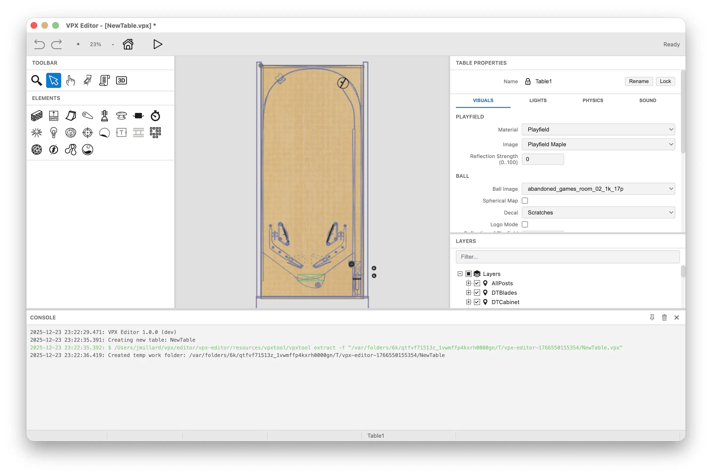
Cross platform Visual Pinball Table Editor using Electron and vpxtool.
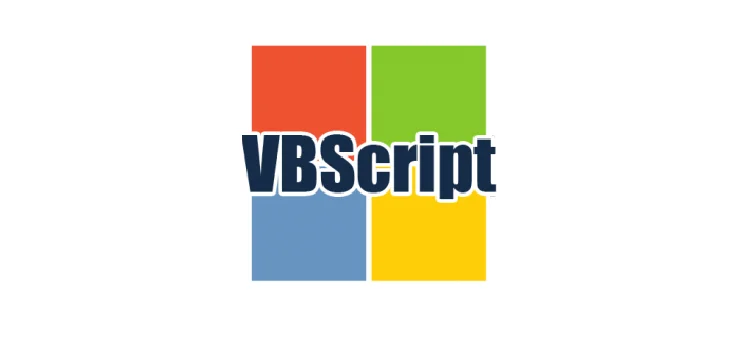
Collection of community-provided Visual Pinball table patches (primarily by @francisdb) needed for Visual Pinball Standalone.
An engine for creating and re-creating pinball machines, virtually.
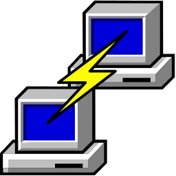
Small Windows utility to send commands to multiple PuTTY windows.
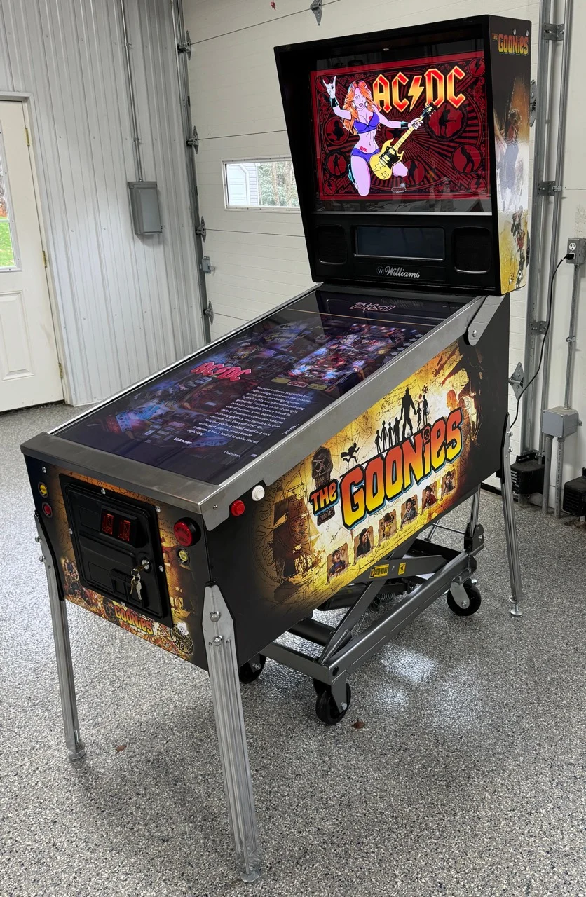
Visual Pinball cabinet running VPX Standalone on Batocera 42.
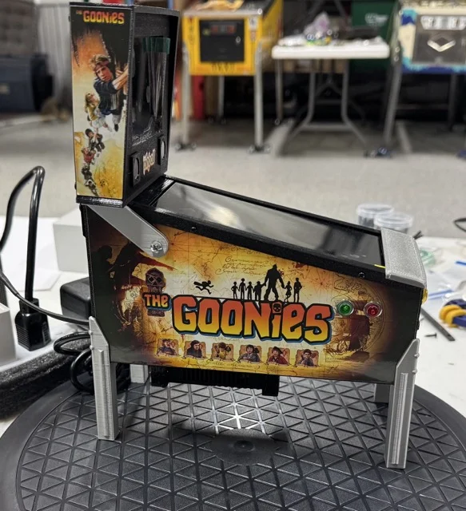
Remix of @phoenixfox's mini virtual pinball cabinet running VPX Standalone on Batocera 42.
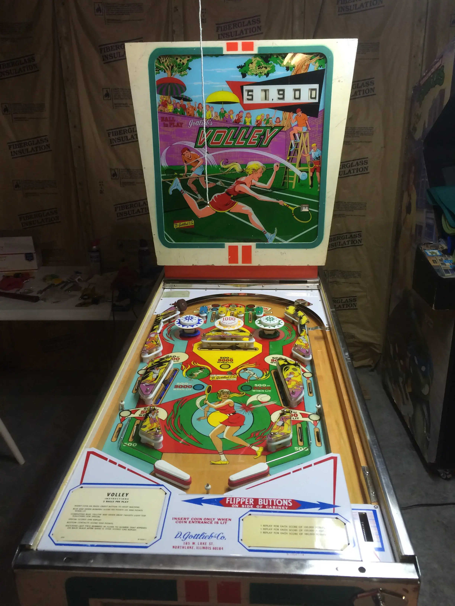
A restoration of a 1976 Gottlieb Volley pinball machine.
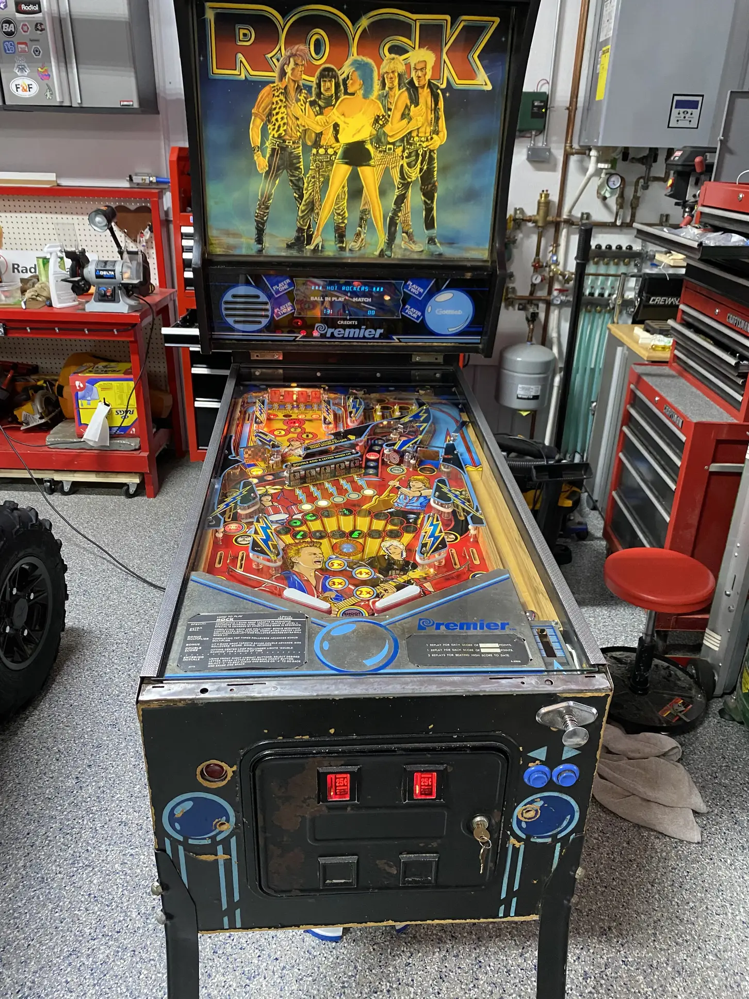
Shopped out a Gottlieb Rock pinball machine for a friend - full cleaning, new rubbers, bulbs, and a bunch of fixes to the System 80 board to get it playing again.
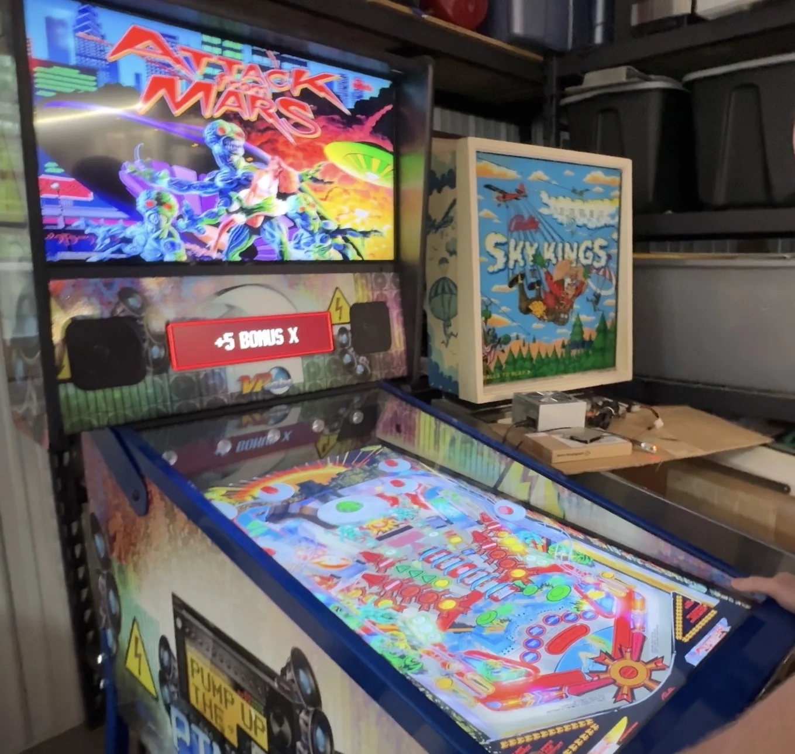
Bringing an early 2014 VPCabs "Pump Up The Pinball" machine back to life using VPX Standalone on Batocera 42.
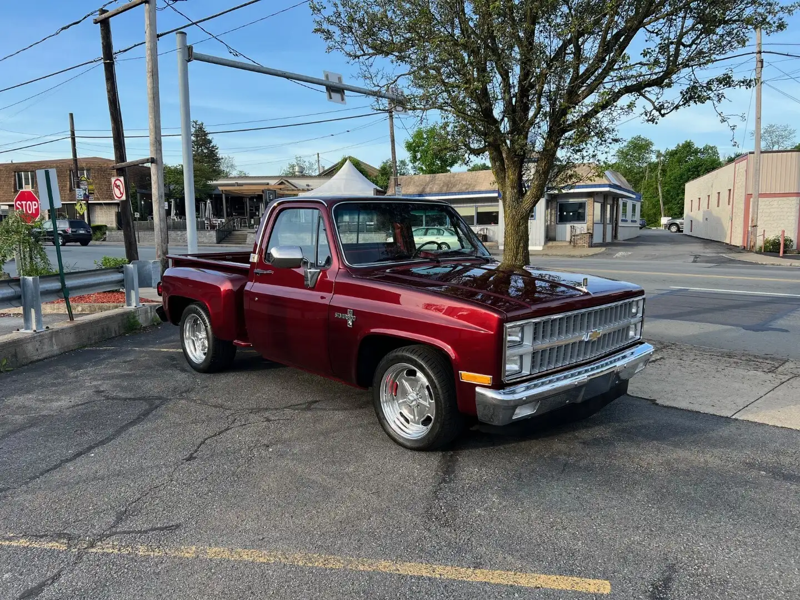
Complete restoration of our Dad's 1981 Chevy Stepside with LS3 engine, T56 transmission, and full modernization.
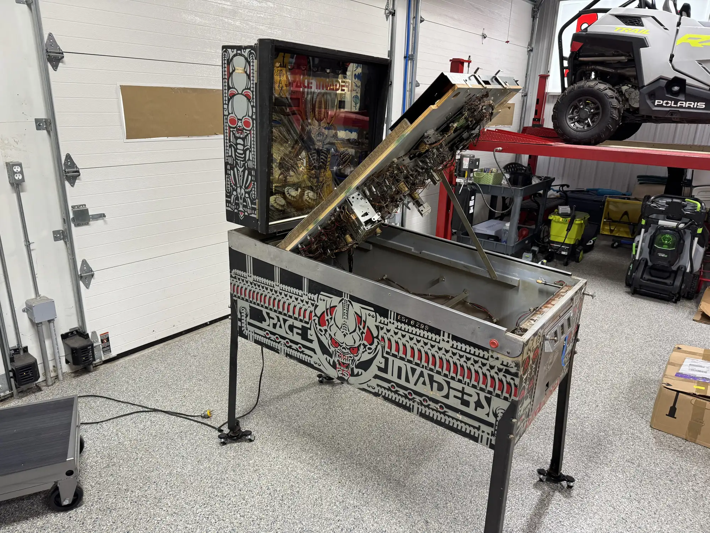
1979 Bally Space Invaders Restoration Project
How to install Mission Pinball on an Orange Pi 5. (As seen on @scottacus64's homebrew Cuphead)
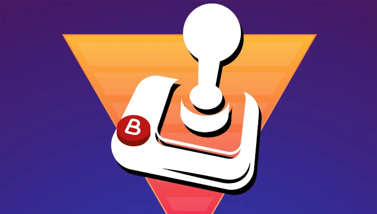
Tips for setting up Visual Pinball on three screens using Batocera 39.
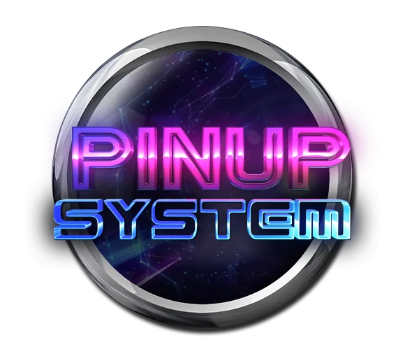
Studying PinUP Player to provide initial PUP support in Visual Pinball Standalone.
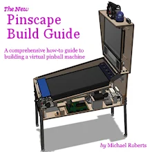
Notes on getting Pinscape working on macOS, which enabled adding support to libdof.
Covers common script issues encountered when running tables on Visual Pinball Standalone.